ANOTHER EDEN LIVE #59
2026.09.10 방송 (영어 공식 방송) · 67분 · 원본 영상
방송 화면 판독 기준 정리 — 슬라이드 원문을 그대로 옮기고 한국어를 병기했다. 캐릭터명은 한국판 표기 우선, 미출시·미확인 명칭은 영문을 유지했다.
21:05~30:23 · PV 1분 35초 + 발표 슬라이드
기존 3부 「The Chronos Empire Strikes Back / Part 3: Into the Hollow」 에 「: Rhapsody」 부제가 붙은 확장이다. PV 서두와 발표 슬라이드 양쪽에 각본·감독 가토 마사토(Masato Kato) 크레딧을 전면에 세웠다.
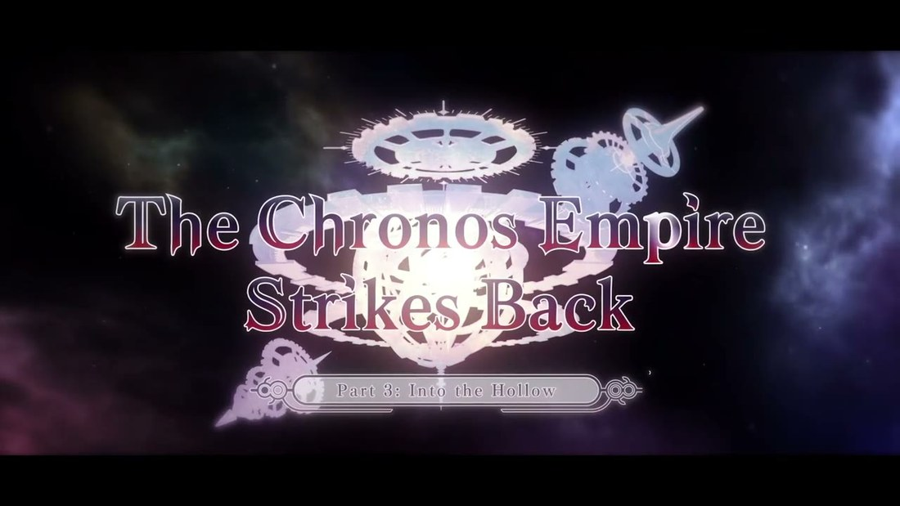
기존 3부 타이틀 카드 — The Chronos Empire Strikes Back
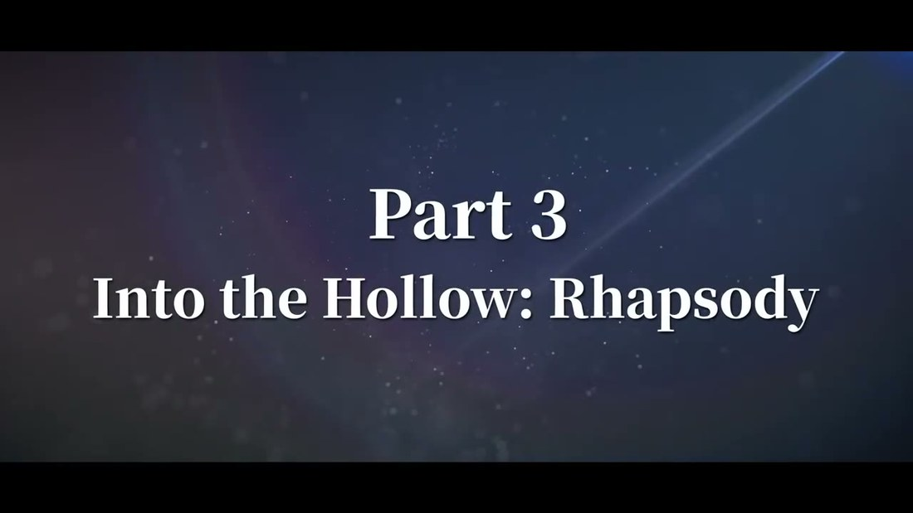
PV 클라이맥스 — 부제 「: Rhapsody」 최초 노출
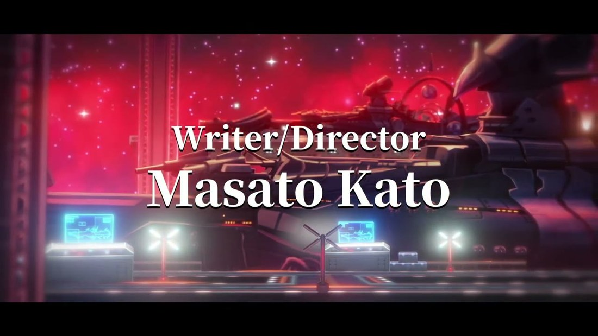
PV 서두 크레딧 — Writer/Director Masato Kato
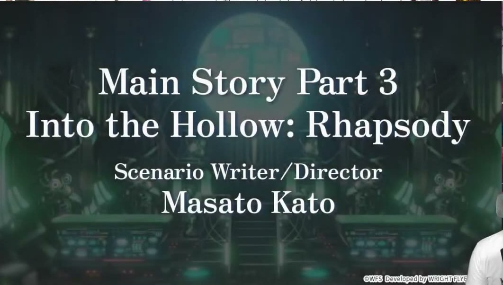
PV 종료 직후 발표 슬라이드. 신규 스토리 정식 명칭과 각본·감독이 한 화면에 들어간다.
크로노스 제국과의 긴 싸움은 마침내 끝났다. 하지만 그 모든 것을 지켜본 한 소녀에게는 새로운 여정이 이제 막 시작되고 있었다. 제국의 고대 유물 — 죄 많은 한 쌍의 날개와 감시자의 무덤. 그것은 아마도 최후의 에덴일지도 모른다.
Ancient remains of the empire—a sinful set of wings and a watcher's tomb. It may just be the final Eden.
— 23:10 줄거리 슬라이드
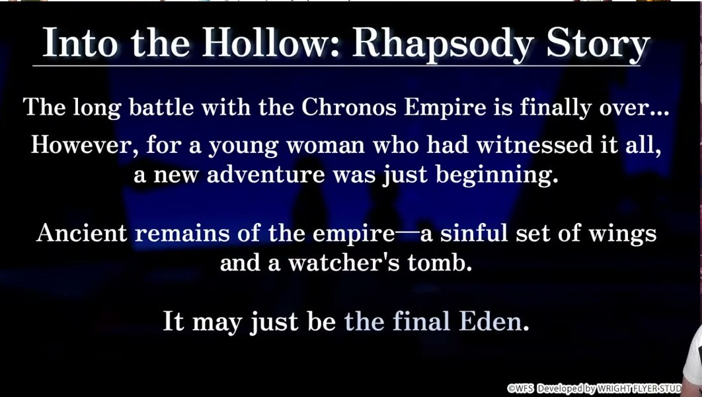
슬라이드에서 청색으로 강조된 부분은 “remains of the empire” 와 “the final Eden” 두 곳이다.
3부 4권으로 어나더에덴의 이야기는 한 차례 마무리를 맞았지만, 더 써 달라는 요청을 받았습니다. 그래서 시간의 바다(Ocean of Time)를 아득히 건너 원초의 차원(primordial dimension)에 이르는 무언가를 써야 한다는 생각에서 출발했습니다. 그 결과 감시자(the Watcher)와 그녀의 마지막 싸움이 어떤 것이었는지를 풀어내게 되었습니다. 이것이 시리즈의 좋은 에필로그가 될 수 있는 하나의 이야기라고 생각했습니다.
— 시나리오 각본 가토 마사토
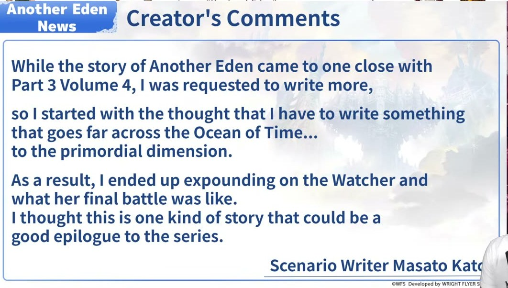
감시자가 여성임을 “her final battle” 로 명시한다. 정체를 가리키는 캐릭터명은 병기되지 않았다.
PV에 삽입된 인게임 나레이션이 시점을 못박는다. 방송 채팅에서도 붕괴 전/후 혼동 반응이 다수 나왔지만, 화면에 제시된 정보는 붕괴 이전 한 가지뿐이다.
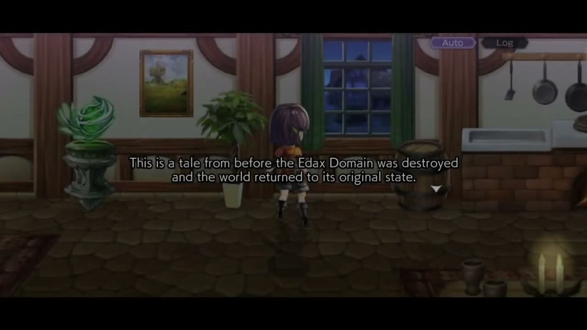
This is a tale from before the Edax Domain was destroyed and the world returned to its original state.
“이것은 에닥스 영역(Edax Domain)이 붕괴하고 세계가 본래의 모습으로 되돌아가기 전의 이야기다.” 이어지는 2행은 “하지만 나는 그냥 내버려 둘 수 없었다. 아직 해야 할 일이 남아 있었으니까.”
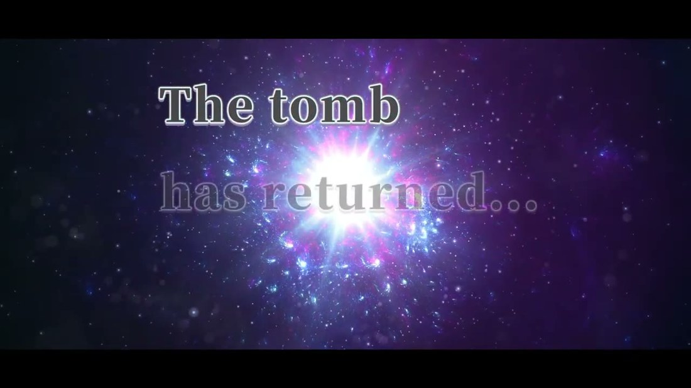
“The tomb has returned…” — 그 무덤이 돌아왔다
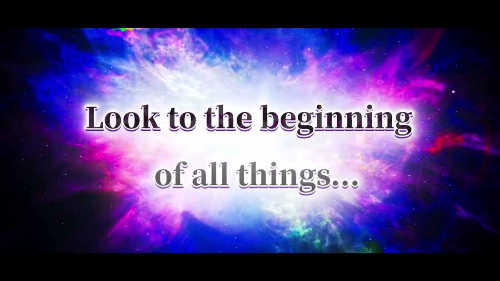
“Look to the beginning of all things…” — 만물의 시작을 바라보라
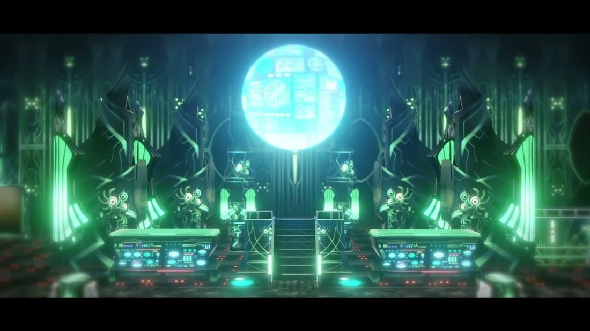
녹색 발광 신전 내부 — 발표 슬라이드 배경으로도 재사용
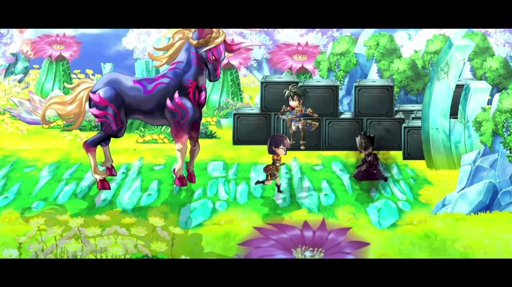
형광 크리스탈 초원 + 거대 유니콘형 몬스터
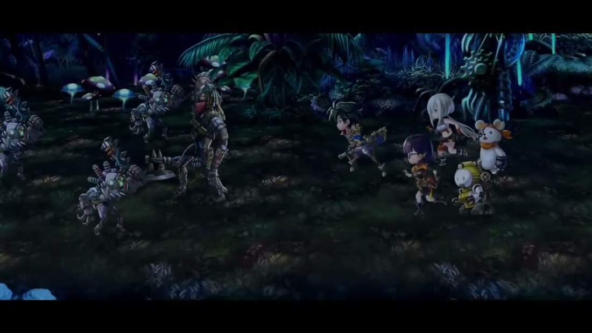
야간 형광 정글 전투 — 사이드킥 동행 연출
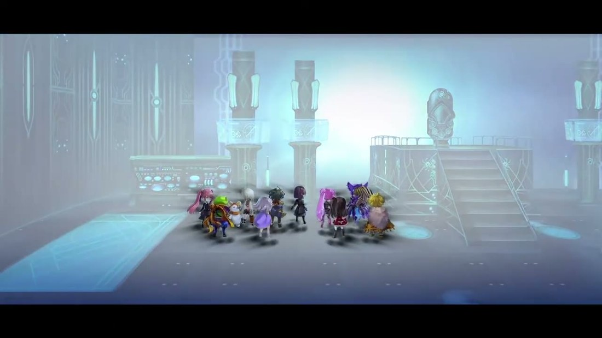
백색 고대 시설 집합컷 — 약 11인
슬라이드 제목 자체가 「? ? ?」 다. 설명은 에닥스 영역에서 발신된 구조 신호(distress signal)의 발신원 / 미지로 가득한 지역 뿐이고, 지역명은 의도적으로 가려져 있다.
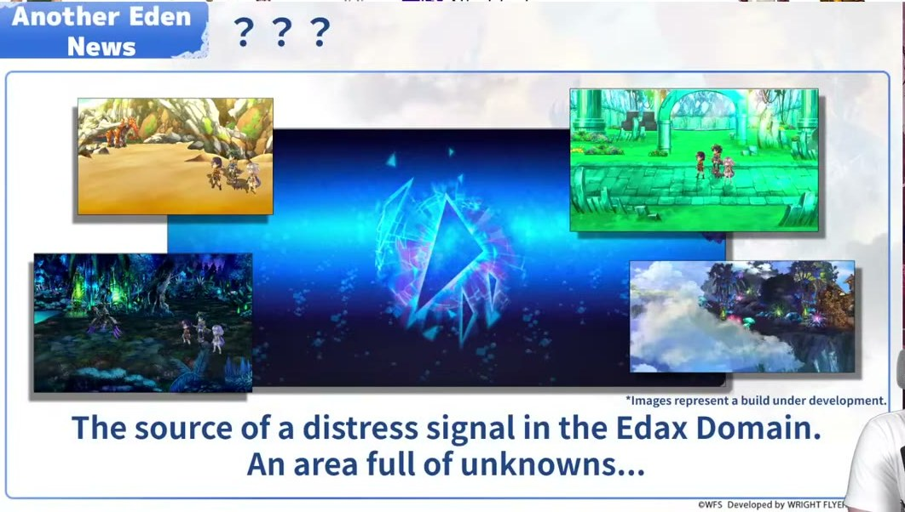
환경 스샷 4종 — 황갈 사막·암굴 / 녹색 석조 유적 / 야간 형광 정글 / 구름 위 부유 섬·폭포. 중앙 심볼은 청·자색 삼각 크리스탈.
소개 문구는 “비할 데 없는, 무적의 천재 과학자”. 줄거리의 “모든 것을 지켜본 한 소녀” 가 애쉬티어로 특정된다.
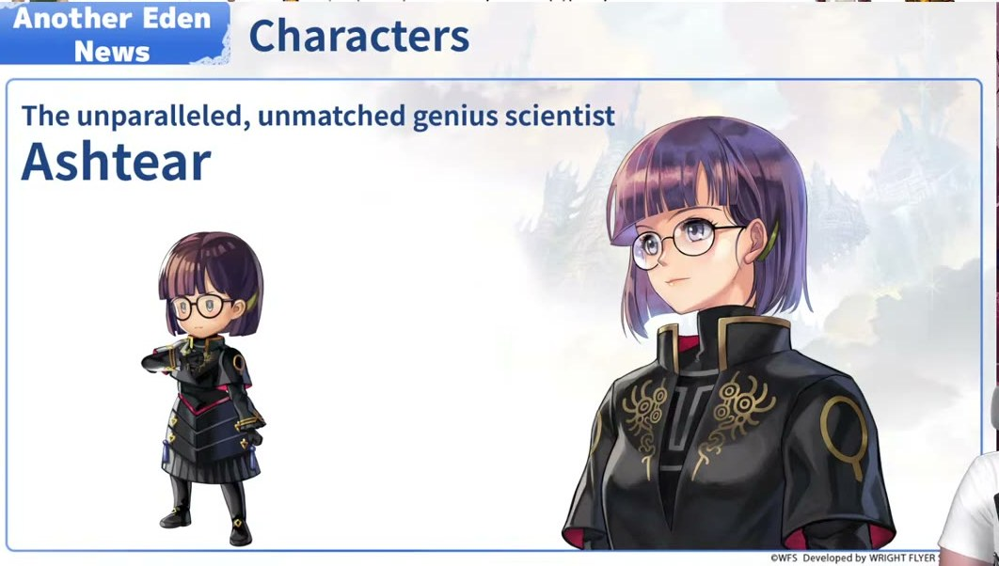
캐릭터 소개 슬라이드 — 기존 흑·금 예장 일러스트를 사용
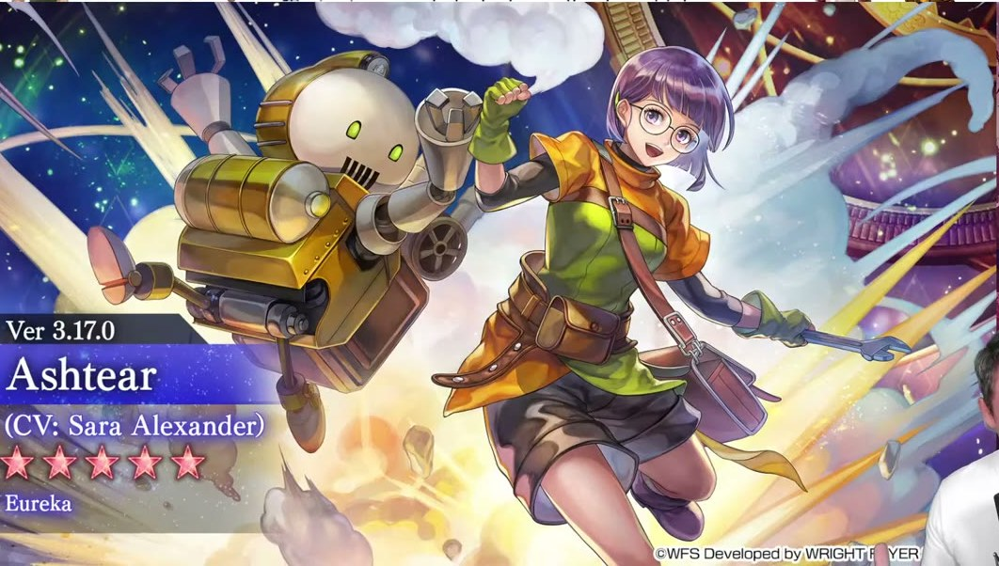
Ver 3.17.0 / 애쉬티어 ★5 「Eureka」 — CV: Sara Alexander
스토리 외 탐색 콘텐츠를 진행해 획득한다. 「노동(Labor)」 테마가 장비로 표현되어 개체별로 헤드밴드·안전모·작업모가 다르다. 개체별 이름은 표기되지 않았다. 종합 요약 슬라이드에는 “Laika 신규 거동 추가” 도 함께 적혀 있다.
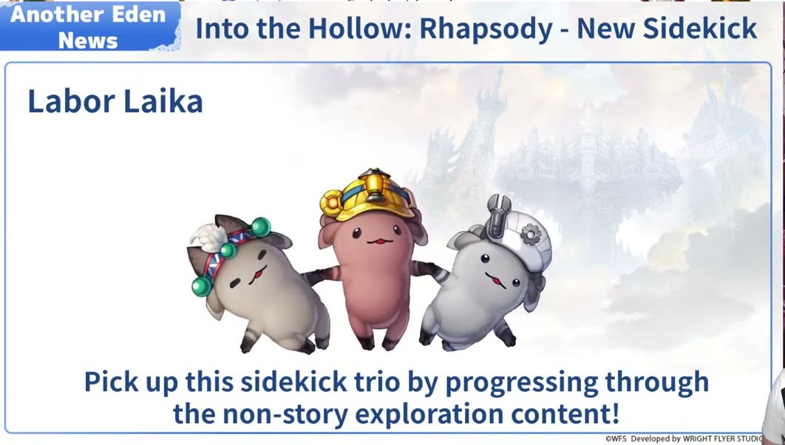
①회백색 + 녹색 구슬 헤드밴드·흰 깃털 ②분홍 + 금색 안전모 ③회색 + 흰 작업모 + 렌치·기어 장식.
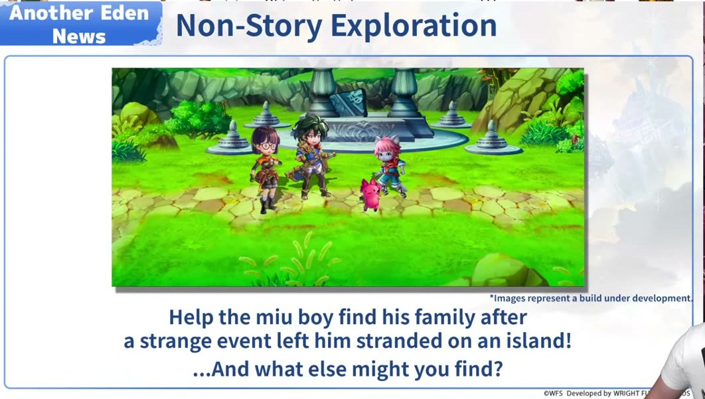
Help the miu boy find his family after a strange event left him stranded on an island! ...And what else might you find?
이상한 사건으로 섬에 홀로 남겨진 미우(miu)족 소년이 가족을 찾도록 돕는 콘텐츠. 슬라이드는 “…그리고 그 밖에 무엇을 발견할지는?” 으로 추가 요소를 암시한다.
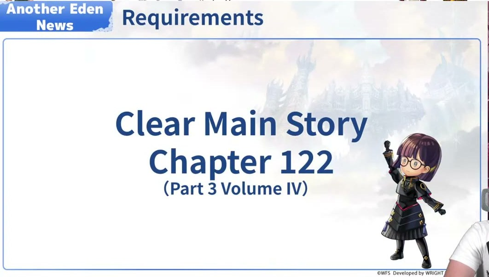
메인스토리 122장(3부 4권 / Part 3 Volume IV) 클리어
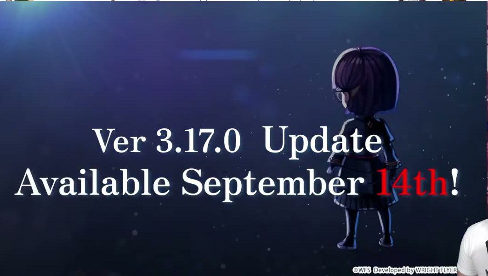
Ver 3.17.0 — 9월 14일 배포
30:23~36:55 · PV 30:50~32:25
스타일 정식명은 Ruborensis. 캐치프레이즈는 소드 가드(Sword Guard)의 저주에 얽매인 선명한 여검사 — “A vibrant swordstress bound by the Sword Guard's curse.” 사이드킥 피기(Pyggie) 도 어나더 스타일로 동반 실장되며, 질퍼니 AS 인카운터 시 함께 획득된다.
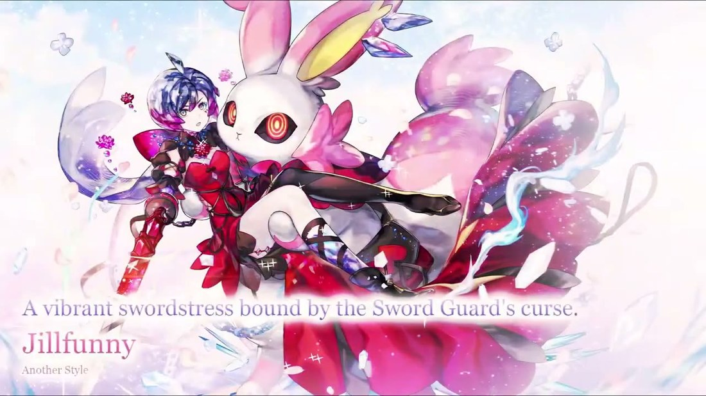
PV 오프닝 — 붉은/검은 드레스의 질퍼니를 피기가 안아 올린 구도. 채팅·웹캠이 없는 클린 프레임이다.
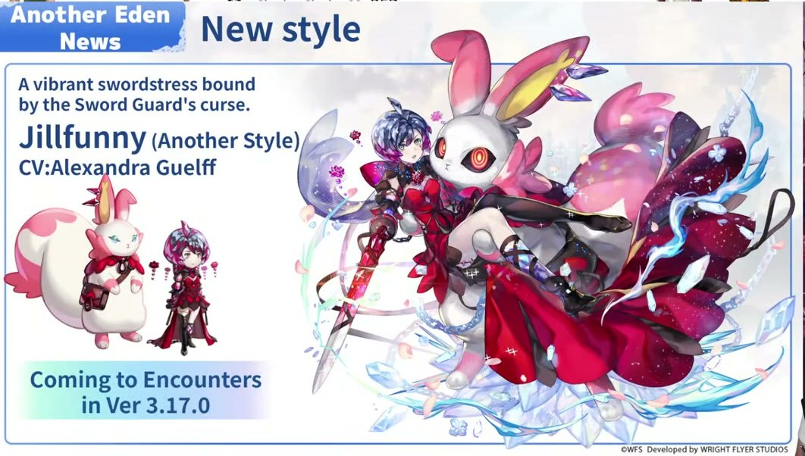
신규 스타일 공지 — CV: Alexandra Guelff, 3.17.0 인카운터 등장
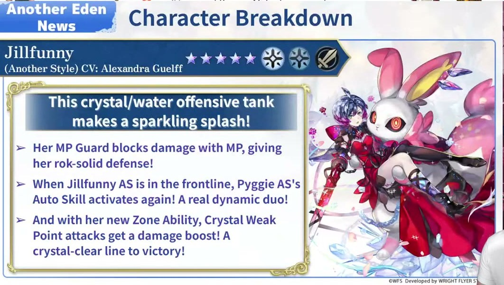
Character Breakdown — 크리스탈·수 이중 속성 / 검 / 공격형 탱커
| 항목 | 내용 |
|---|---|
| 속성 · 무기 | 크리스탈 + 수(水) 이중 · 검 · ★5 · 포지션 “crystal/water offensive tank” |
| MP Guard | 받은 피해의 50%를 MP로 부담 |
| 전투 시작 ① | 전열에 크리스탈 아군 3인 이상 → E. Crystalline Stance 전개 |
| 전투 시작 ② | 피기를 메인/서브 세팅 → 어나더 포스 게이지 100% 충전 + Crescentia 발동 |
| 존 어빌리티 | 크리스탈 약점 공격 대미지 상승 |
| 연계 | 질퍼니 AS가 전열에 있으면 피기 AS의 오토 스킬이 1회 추가 발동 |
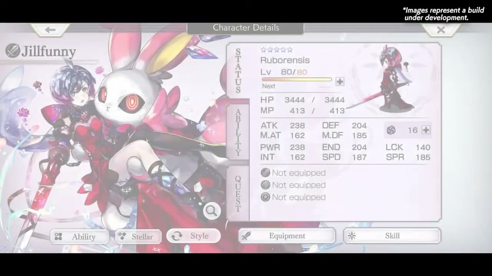
Character Details — 스타일명 Ruborensis · Lv80 무장비 HP 3444 / MP 413
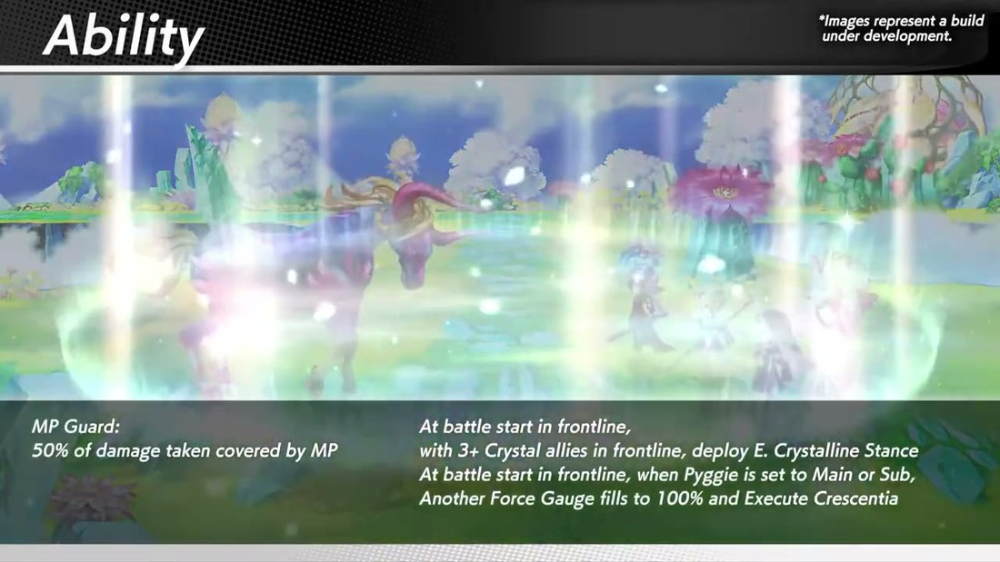
Ability — MP Guard + 전투 시작 시 존 전개·AF 100% 조건
| 스킬 | 내용 |
|---|---|
| <Rapid Crystal Punt> 오토 스킬 | 단일 적 수(水) 타격 (XL). 위력이 아군 전원 최대 MP 총합에 비례 — 캡 4,000 / 12배. 질퍼니(Ruborensis) 전열 시 차지 스택 +1 후 재공격. Crystalline Stance 전개 시 공격 타입이 크리스탈로 변경 |
| <Twinkle Toe-nado Kick> 차지 스킬 · 차지 7 소비 | 단일 적 수 타격 3회 (XXL). 위력이 아군 전원 최대 MP 총합에 비례 — 캡 4,000 / 20배 + 추가 공격. 전개 존에 따라 분기 — Sacred Water Stance: 질퍼니가 턴 종료까지 Guard / Crystalline Stance: 공격 타입 크리스탈 + Lunatic (Risktaker) 획득 |
MP 총합 스케일링 설계라 피기의 오라 Solemnity(최대 MP 1,000 이상 시 아군 전원 피해 +20%)와 세트로 묶인다.
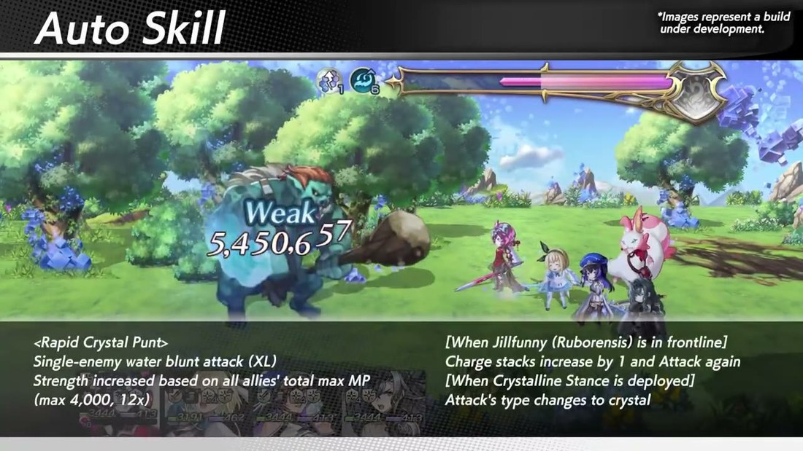
오토 스킬 원문 — 캡 4,000 / 12배
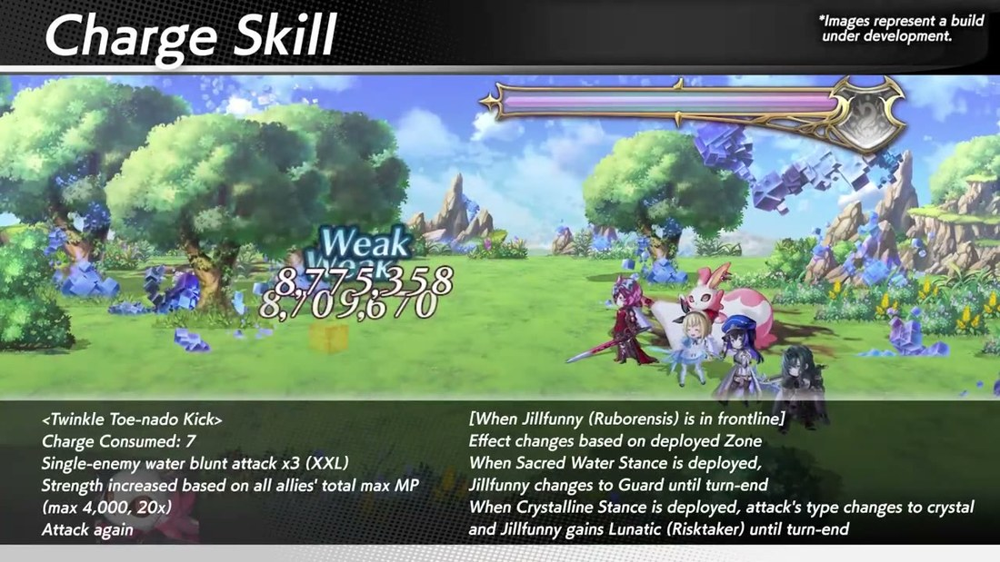
차지 스킬 원문 — 캡 4,000 / 20배 + 존 분기
| 항목 | 내용 |
|---|---|
| 스탯 | Might 4431 / Potential 4431 / ATK 361 / SUP 232 / RES 116 / M.AT 116 / OBS 159 / SPD 306 |
| 오라 Solemnity | 아군 전체 · 최대 MP 1,000 이상일 때 발동 · 아군 전원 피해량 +20% |
| 오라 Awe | 아군 전체 · Special 타입 환경 효과 중 발동 (효과 본문은 화면 스크롤 밖으로 미확인) |
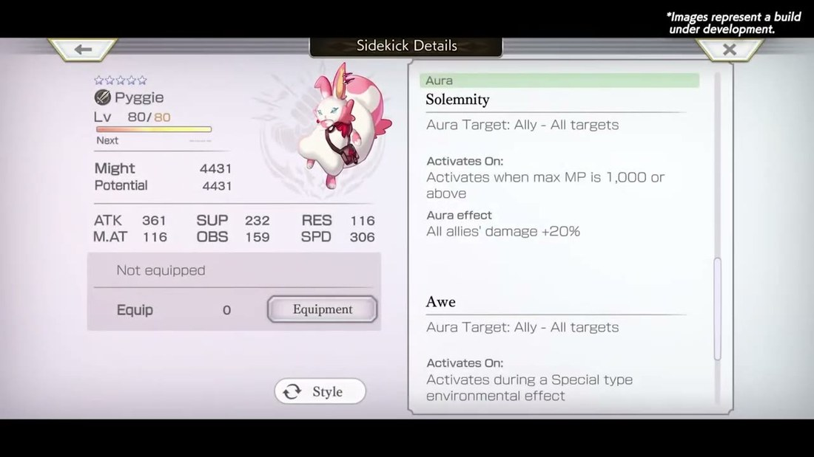
Sidekick Details — 피기 AS 스탯과 오라 2종.
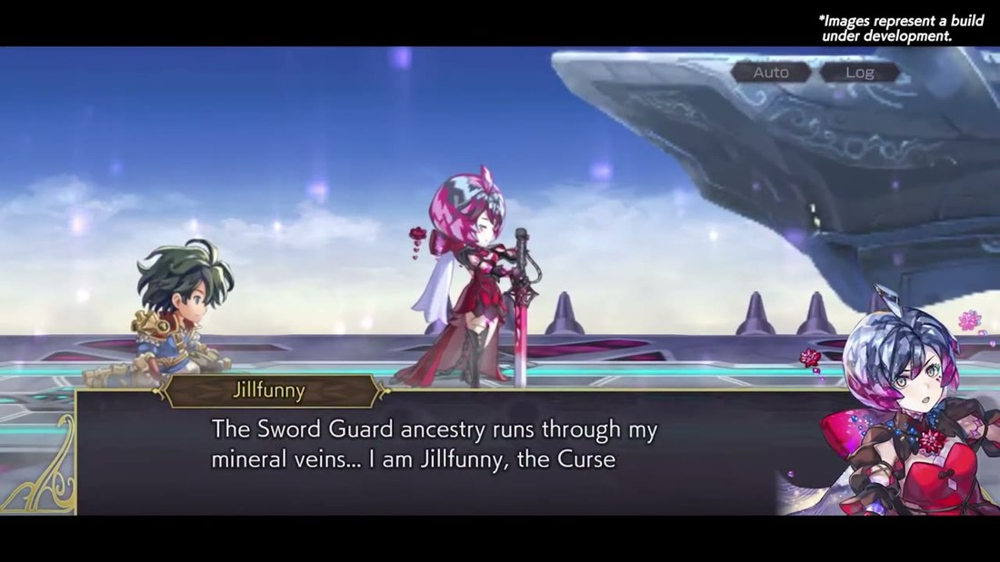
“I am Jillfunny, the Curse” — AS 질퍼니의 자기소개
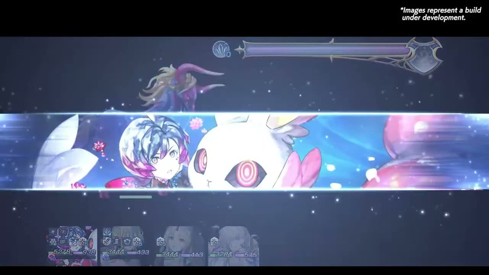
필살기 / 어나더 포스 컷인 연출
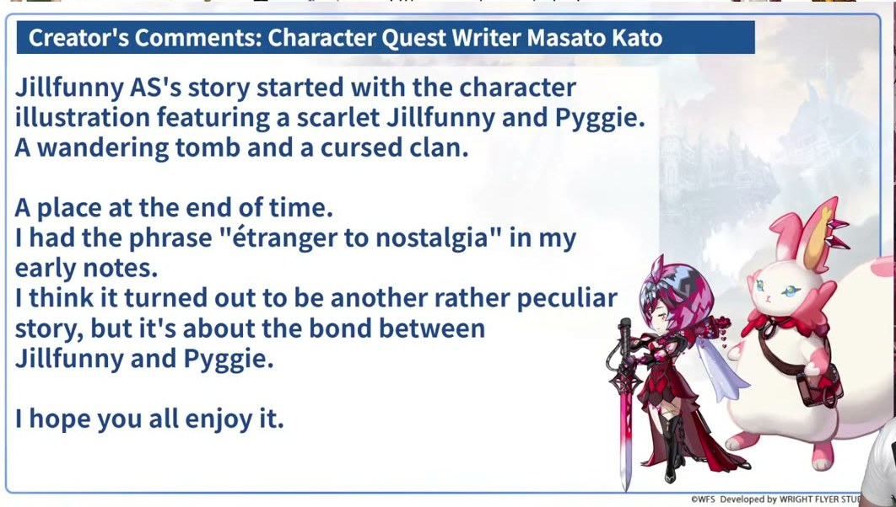
캐릭터 퀘스트 각본 — 가토 마사토
질퍼니 AS의 이야기는 붉은 질퍼니와 피기가 그려진 캐릭터 일러스트에서 시작됐습니다. 방랑하는 무덤, 그리고 저주받은 일족. 시간의 끝에 있는 장소. 초기 메모에 “étranger to nostalgia(향수의 이방인)”라는 문구를 적어뒀습니다. 결과적으로 또 한 편의 다소 기묘한 이야기가 된 것 같지만, 핵심은 질퍼니와 피기의 유대입니다.
— 캐릭터 퀘스트 각본 가토 마사토
가토 씨로부터 “이번엔 빨강과 검정으로 입혀주세요!”라는 요청이 왔습니다. 정면에서 보면 화려하게 차려입은 모습이지만 목 뒤의 큰 붉은 리본처럼 귀여운 디테일도 숨겨 뒀고, 동시에 그녀가 “얽매여 있다”는 불협화음적 요소를 어두운 끈과 리본으로 표현했습니다. 작업 중 한 가지 의문이 머리에서 떠나지 않았습니다 — 이번엔 왜 옷만이 아니라 몸 자체가 변한 걸까? 피기와 이 소드 가드 소녀에게 무슨 일이 벌어지고 있는 걸까요?
— 캐릭터 디자인 사토 유카(Yuka Sato)
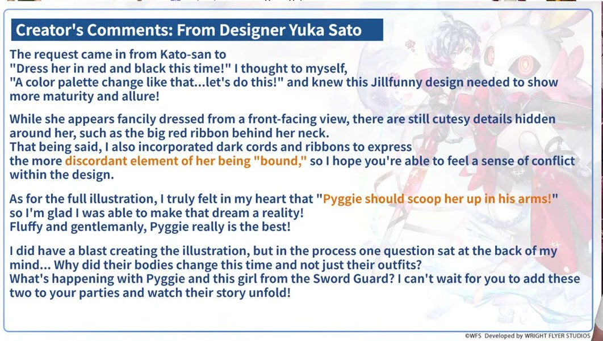
디자이너 코멘트 전문. 마지막 문단이 스토리 복선을 직접 언급한다.
36:55~37:40
★5 클래스 Lazuli Medea (CV: Holly Freeman) 가 스텔라 어웨이크닝 대상이다. 성능·스킬 정보는 이번 방송에서 공개되지 않았고 일러스트 카드만 노출됐다. 추가로 이벨라 5★ Lazuli Medea 전용 무기가 Manifestation: Weapon Tempering 에 추가된다.
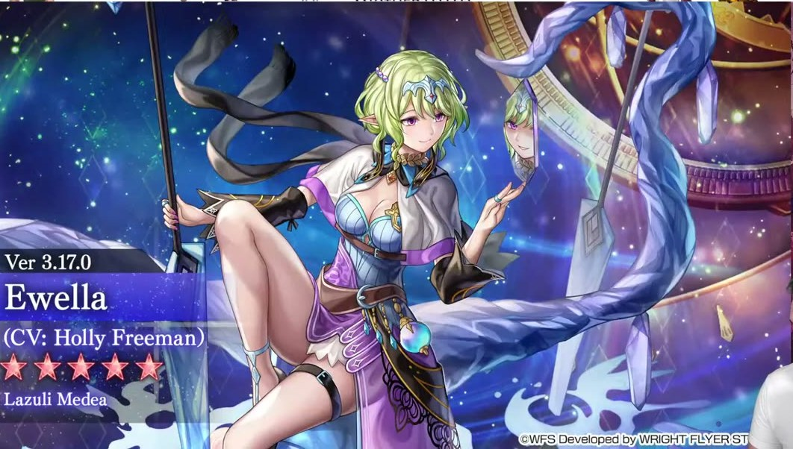
Ver 3.17.0 신규 스텔라 어웨이크닝 발표 카드. Lazuli Medea 는 이후 스타차트 명칭으로도 등장한다.
37:40~39:20 · 전부 3.17.0 업데이트 ~ 2026-10-11 14:59 UTC
공통 조건은 10연 1회당 유료 크로노스 스톤 1,000개. 네 배너 모두 하단에 “Obtain Jillfunny AS Star Trails!” 띠가 깔린다.
| 픽업 | 횟수 | 대상 · 확률(10회차) |
|---|---|---|
| 질퍼니 AS & 피기 AS SA 보너스 | 최대 3회 | 질퍼니 AS 10% · SA 상태로 등장 · 각성 후 인카운터 시 +10 Shadow points · 질퍼니 AS 획득 시 사이드킥 피기 AS 동반 |
| Starchart Encounter | 1회 한정 | 니나 / 니르야 / 에바 각 10% · 보너스로 Lazuli Medea 스타차트 ×1 + 5★ 이벨라 인카운터 티켓 ×1 |
| Crystal SA 보너스 | 최대 3회 | 질퍼니 AS / Red Clad Flamemancer AS / 알마 AS 각 5% (전부 SA 상태) · 이미 SA 완료 캐릭터가 나오면 Shadow 또는 Light 포인트 +10 으로 전환 |
| Sword | 최대 3회 | 질퍼니 AS / 「Moonlight Flower」 히스메나 AS / 플람라피스 ES / 엘레노어 / 틸릴 ES 각 10% |
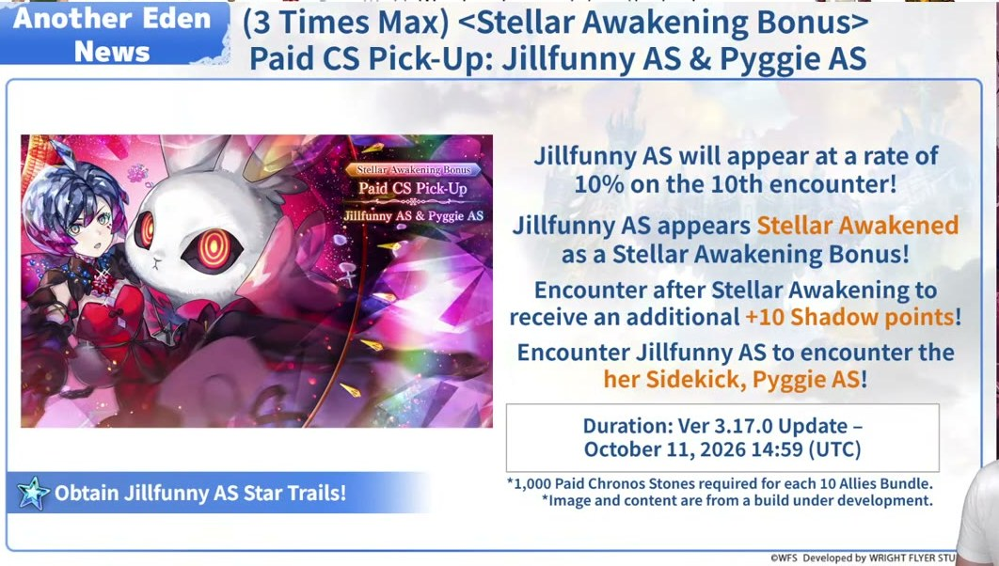
질퍼니 AS & 피기 AS 픽업 — SA 보너스 조건
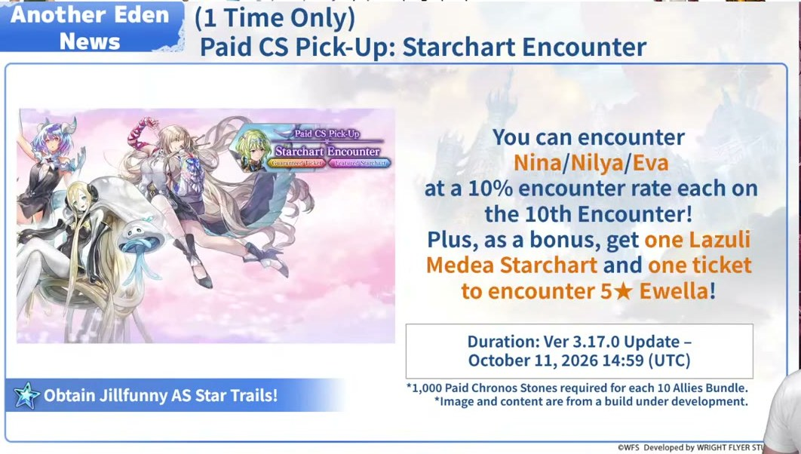
Starchart Encounter — 이벨라 각성 재료 확정 지급
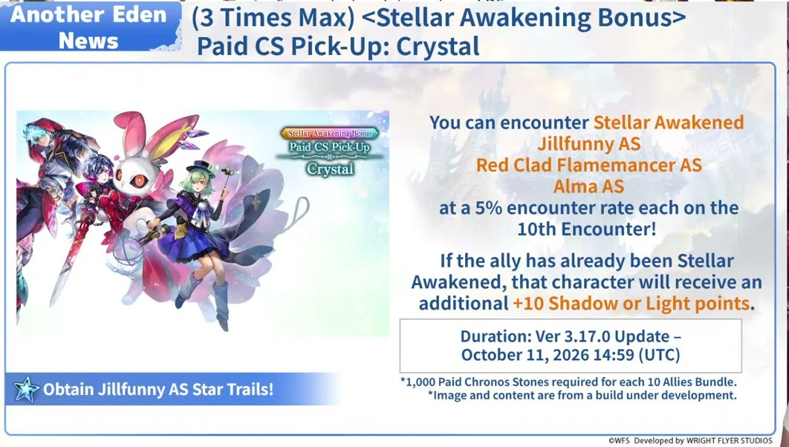
Crystal 픽업 — 중복 시 Shadow/Light +10 규칙
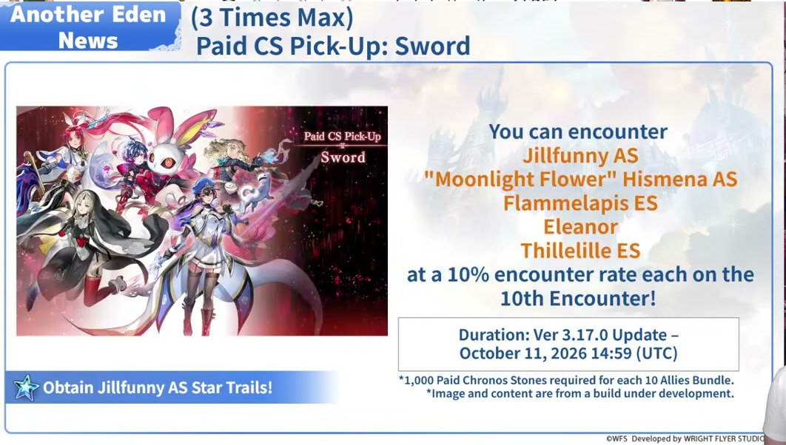
Sword 픽업 — 5명 각 10%
39:20~46:15
판매 기간은 전부 2026-09-16 15:00 ~ 2027-01-31 14:59 UTC, 각 1회 한정. 구매는 상점 → Packs 탭. 상점 인카운터 티켓 유효기간은 구매일부터 30일이다.
| 팩 | 가격 | 내용 |
|---|---|---|
| Another Eden Begins Release Pack | 유료 CS 1,500 | 비긴즈 등장 5★ Gallery of Dreams 캐릭터 11명 인카운터 티켓 11장 + Allcosmos Starchart ×3 + Lone Encounter Ticket ×3 |
| AEB DLC Vol. 1 | 유료 CS 500 | 5★ 틸릴 확정 티켓 ×1 + 5★ 티라미수 확정 티켓 ×1 + Allcosmos Starchart ×1 + Lone Encounter Ticket ×3 |
| AEB DLC Vol. 2 | 유료 CS 500 | 5★ 엘실 확정 티켓 ×1 + 4★ 베네디트 확정 티켓 ×1 + Allcosmos Starchart ×1 + Lone Encounter Ticket ×3 |
Vol.2 는 5★+4★ 조합인데 가격은 Vol.1(5★ 둘)과 동일한 500이다.
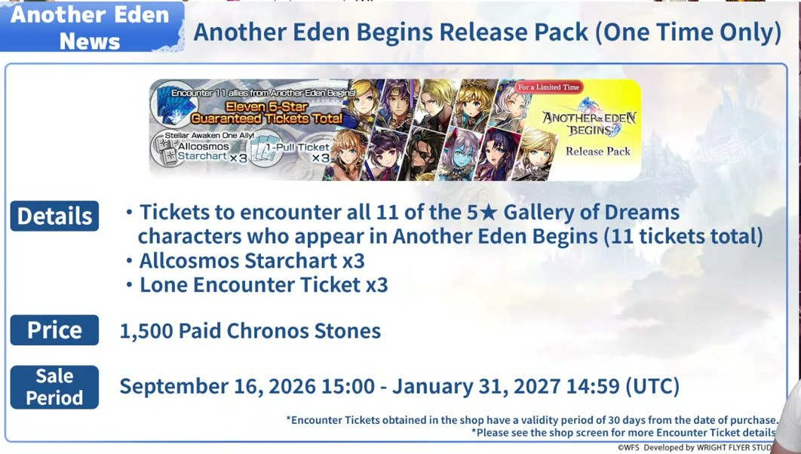
릴리즈 팩 상세 — 11장 확정 티켓
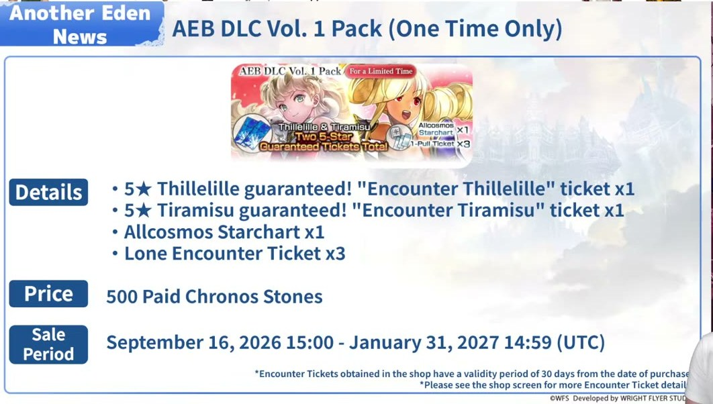
DLC Vol.1 — 틸릴 & 티라미수
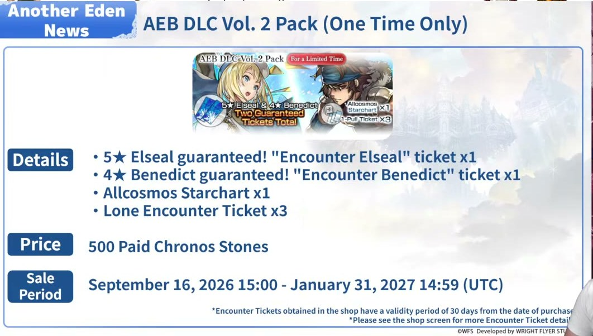
DLC Vol.2 — 엘실 & 베네디트
| 세일 | 내용 | 기간(UTC) |
|---|---|---|
| 전야 세일 웹샵 전용 · 1회 | 유료 2,200 + 무료 440 (보너스 20%) | 9/13 03:00 ~ 9/14 05:59 |
| 업데이트 세일 각 2회 | 인앱: 유료 2,200 / 4,500 (보너스 없음) 웹샵: 유료 2,200 + 무료 220 · 유료 4,500 + 무료 450 (10%) | 9/14 01:00 ~ 9/30 14:59 |
전야 세일 보너스율(20%)이 업데이트 세일(10%)의 두 배다. 양쪽 모두 웹샵이 인앱보다 유리하다.
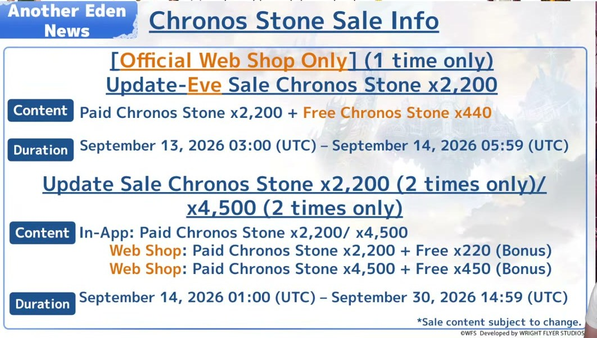
세일 정보 슬라이드. 하단에 “Sale content subject to change” 각주가 붙는다.
| 캠페인 | 내용 | 기간(UTC) |
|---|---|---|
| Today's Item 증량 | 로그인 보너스 크로노스 스톤 50개/일 · 최대 700개 (14일). 비긴즈 출시 기념 「Lynx delivery service」 컨셉 | 9/13 15:00 ~ 9/27 14:59 |
| Spotlight Campaigns | 메인스토리 45장(1.5부) ×1 · 55장(2부 1편) ×1 · 66장(2부 2편) ×2 · 84장(2부 3편) ×2 Lone Encounter Ticket 기간 전 클리어분도 소급 인정 · 보상은 스토리 목록에서 수령 | 9/16 15:00 ~ 11/15 14:59 |
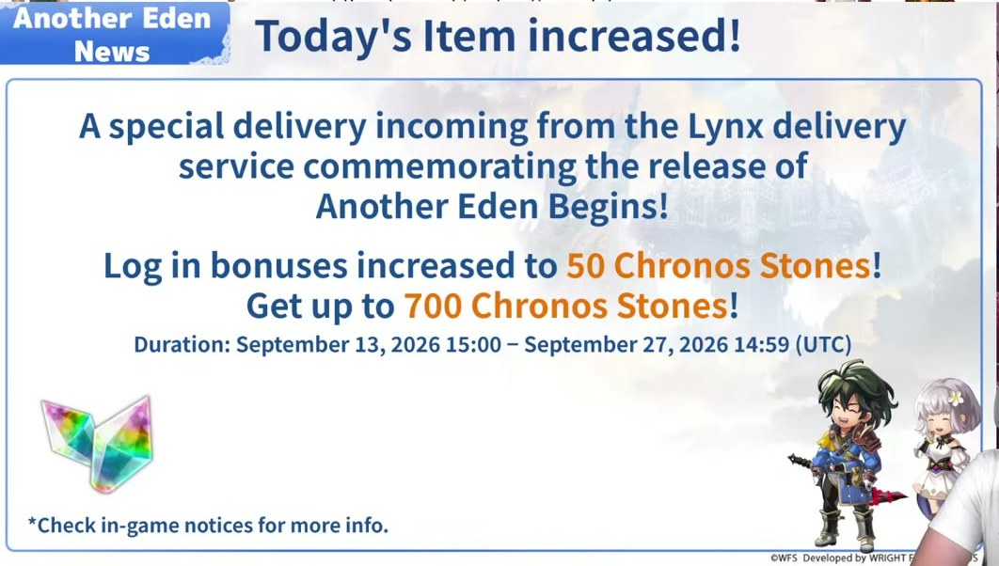
Today's Item — 50 CS / 최대 700 CS
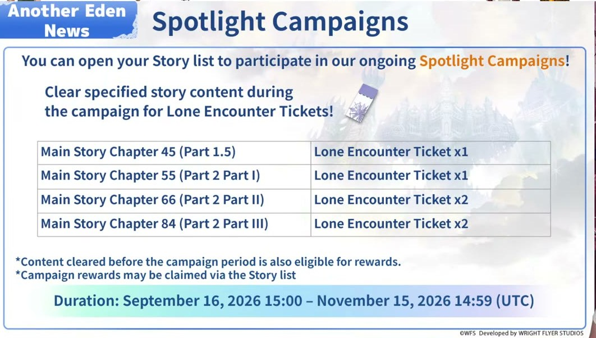
Spotlight Campaigns 보상표 4행
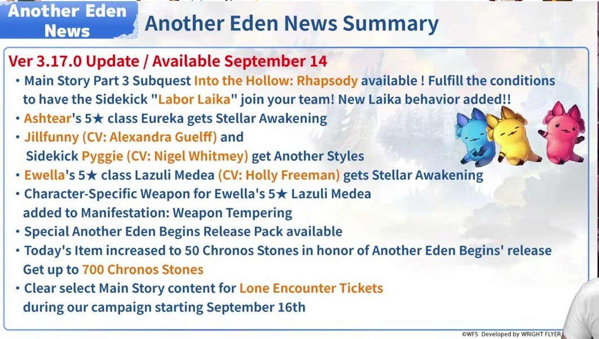
방송이 제시한 8항목 종합 요약. 애쉬티어 SA, 질퍼니·피기 AS, 이벨라 SA, 전용 무기 추가, Labor Laika 합류와 “Laika 신규 거동 추가” 가 이 한 장에서 확인된다.
46:15~63:30
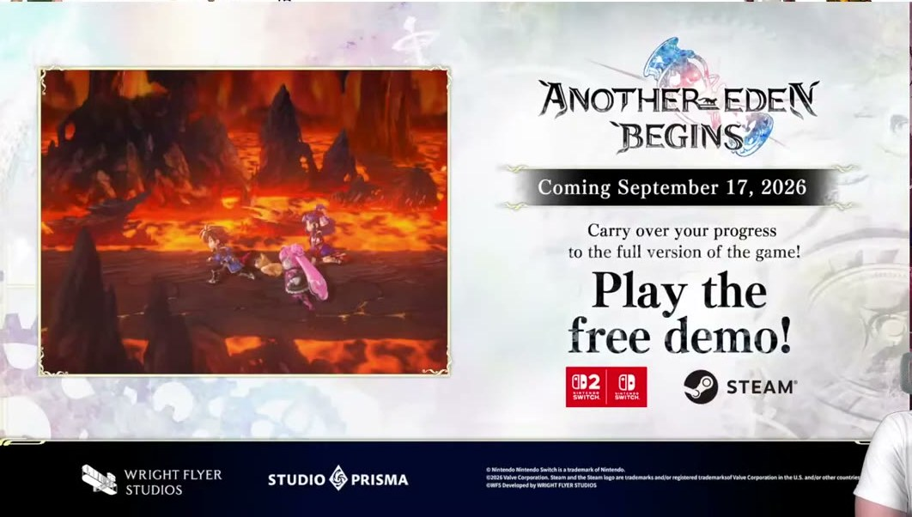
Coming September 17, 2026 — Carry over your progress to the full version of the game! Play the free demo!
2026년 9월 17일 출시 · Nintendo Switch 2 / Nintendo Switch / Steam · 무료 데모 진행 상황을 정식판으로 이어받을 수 있다. 개발 크레딧은 WRIGHT FLYER STUDIOS · STUDIO PRISMA.
비긴즈를 구매하면 기존 어나더에덴(시간을 초월하는 고양이) 쪽으로 지급되는 특전 코드다. Steam판 조기 구매자 한정이며, Switch / Switch 2 다운로드판에는 코드가 동봉되지 않는다.
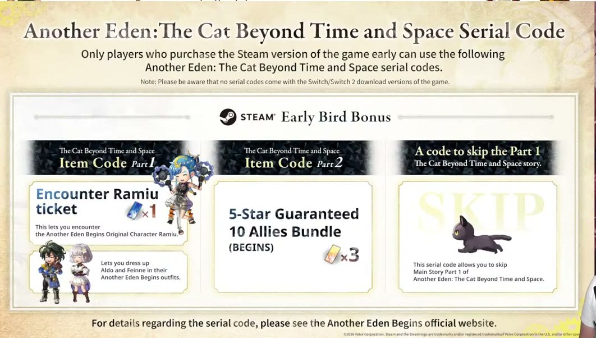
특전 3종 전체 조망 — 아이템 코드 Part 1 / Part 2 / Part 1 스토리 스킵 코드.
| 코드 | 내용 | 사용 기한(UTC) |
|---|---|---|
| Item Code Part 1 | 「Encounter Ramiu」 티켓 ×1 + 알도 Begins 얼터핏 + 피네 Begins 얼터핏 | 2027-09-16 14:59 |
| Item Code Part 2 | 5★ 확정 10인 동료 번들 (Begins) ×3 | 2027-03-15 14:59 |
| Part 1 스킵 코드 | 본편 메인스토리 Part 1 스킵 · 신규 플레이어 전용 · 계정당 1회 · 재사용 불가 | 2027-09-16 14:59 |
교환은 「기타(Other)」 메뉴 → 시리얼 코드. 서로 다른 코드는 복수 입력 가능. 인카운터 티켓 유효기간은 수령일부터 30일. 얼터핏은 각 1개만 보유 가능.
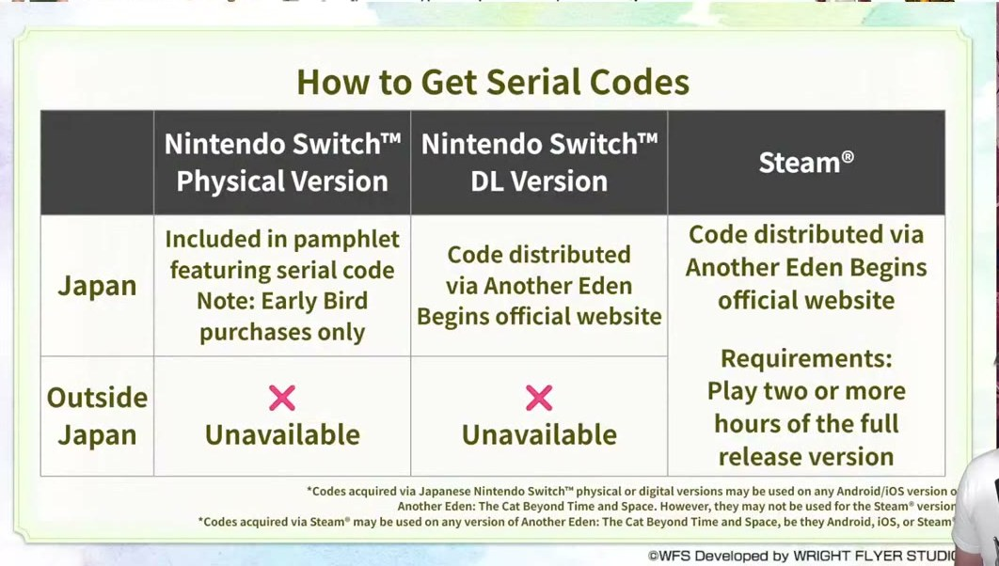
지역 × 플랫폼별 코드 입수 가능 여부 표. 방송 후반 채팅 질문에 답하며 이 표를 다시 띄웠다.
비긴즈 오리지널 캐릭터이며, 본편 어나더에덴에서는 시리얼 코드 전용 확정 인카운터로만 얻는다. 스텔라 어웨이크닝 상태로 등장하고 캐릭터 퀘스트도 보유한다.
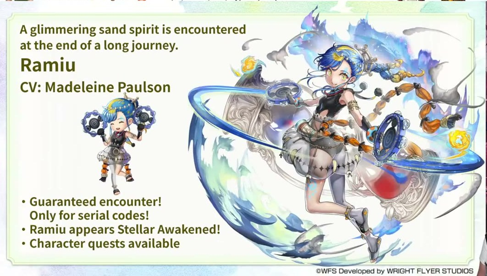
A glimmering sand spirit is encountered at the end of a long journey.
라미우 · CV: Madeleine Paulson. 모래 정령 모티프에 탬버린 형태의 장비를 든 디자인.
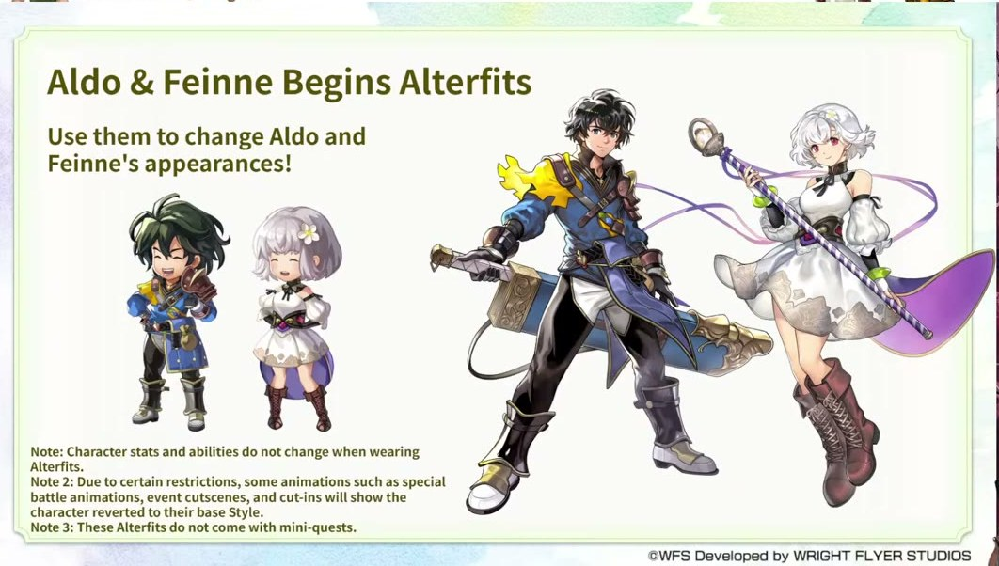
외형 전용 아이템. ①능력치·능력 변화 없음 ②특수 전투 애니메이션·이벤트 컷신·컷인에서는 기본 스타일 외형으로 되돌아감 ③이 얼터핏에는 미니 퀘스트가 없음.
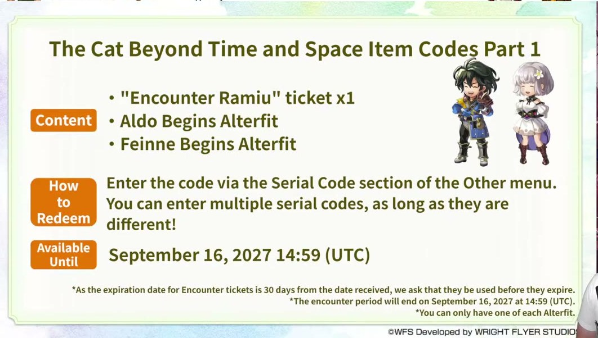
아이템 코드 Part 1 — 라미우 티켓 + 얼터핏 2종
아이템 코드 Part 2 — 5★ 확정 10연 ×3
Part 1 스킵 코드 — 최초 실행 시 “Skip Part 1 and begin” 선택
스킵 코드를 쓰면 계정이 아래 상태로 시작된다.
| 구분 | 상태 |
|---|---|
| 오버월드 | 메인스토리에 필요한 지역만 클리어 처리 · 보물상자 미회수 · 필드의 적과 호러 미토벌 |
| 파티 | 스토리 캐릭터가 4★ 클래스 레벨 60 · 일부 장비·배지 장착 |
| 아이템 | 하/중/상급 스크롤 각 300개 · git 100만 · 피네의 샌드위치 |
| 어워드 | 스토리 클리어 업적 보상은 미수령 · 크로노스 스톤·유도의 모험 티켓 등은 수령 가능 |
| 선물 | 퍼스트 티켓 ×1 · 크로노스 스톤 ×1,000 |
| 시리얼 코드 | 라미우 인카운터 티켓 ×1 · 5★ 확정 10인 동료 번들(Begins) ×3 |
스킵 사용 시 계정 상태 6행 표.
17:49~21:05
이 코너는 사실상 신규 아군 조르나 단독 소개였다. ★5 · 음속성(Shade) · 낫 계열, CV: Poppy Lee Friar, Ver 3.16.70 인연에서 등장.
A lone petal flutters to the ground before ever getting to know the warmth of sunlight. — 햇살의 따스함을 알기도 전에, 한 장의 꽃잎이 홀로 땅으로 떨어진다.
조르나 · CV: Poppy Lee Friar · Ver 3.16.70 인연 등장.
캐릭터 퀘스트 — 임종을 맞는 조르나와 곁을 지키는 에리나
Character Breakdown — 음속성 어태커, 콤보 기반
배율·수치는 슬라이드에 일절 표시되지 않았다.
04:13~17:49 · #AnotherEdenSummer
응모 기간은 2026년 7월 7일 ~ 8월 31일 14:59 UTC, 경로는 X 해시태그 또는 Facebook 댓글이었다. 심사평은 개발진 3인이 분담했다 — Shuichiro Yamamoto(아트 디렉터), Shinnosuke Hirasawa, Yuka Sato.
콘테스트 조건·기간 슬라이드. 부문별 인원은 특별상 3명 / 대상 2명이며, 상품 내역을 표시한 슬라이드는 없었다.
コス(COS) — 피네. “화면 전체를 여름 공기로 가득 채우는 그림”
つぐみ — 후겐 도장(Fugen Dojo)의 아카네·시구레·시온 물놀이
Welcomeさんち。（ＥＲＩ） — 틸릴·모케·엘레노어 + 숨은 쿠모스
Nari — 여름 축제 속 알도·피네
しょうゆ — 빅트(배경에 낚시하는 Gileas)
미수상 응모작 모음 — “Thank you for your submissions!”
화면에 없는 정보는 채워 넣지 않았다
작성 기준: 방송 영상 720p 프레임 809장 추출 → 중복 제거 후 190장 판독 → A등급 63장 게재. 음성 전사(영어)는 진행자 발언 보강용으로만 쓰고, 수치·명칭은 전부 화면 판독을 정본으로 삼았다.
스크린샷 출처: Another Eden Live #59 (공식 YouTube, 2026-09-10) · ©WFS / Developed by WRIGHT FLYER STUDIOS
← 방송 아카이브 목록